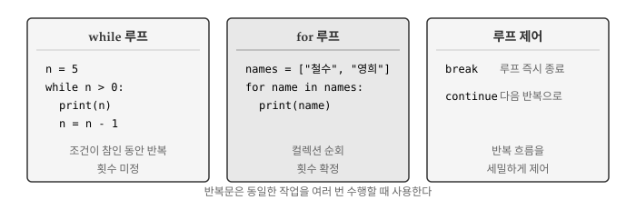
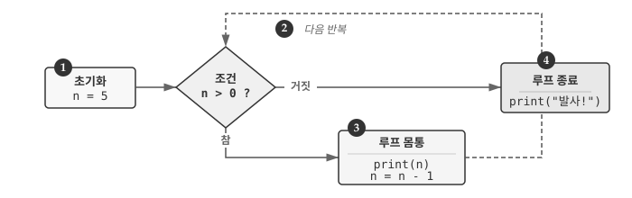
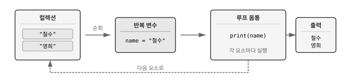
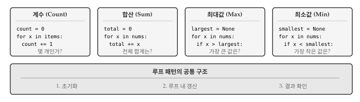
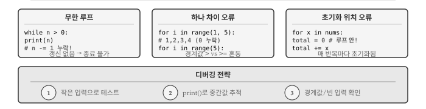

5 반복문
프로그래밍에서 같은 작업을 여러 번 수행해야 하는 상황은 흔하다. 리스트의 모든 항목을 출력하거나, 파일의 각 줄을 처리하거나, 특정 조건이 만족될 때까지 계산을 반복해야 할 때가 있다. 반복문(loop)은 코드 블록을 여러 번 실행하게 해주는 제어 구조로, 컴퓨터가 사람보다 잘하는 일—오류 없이 동일한 작업을 반복하는 일—을 활용할 수 있게 해준다.

그림 5.1 는 파이썬의 두 가지 반복문과 루프 제어 키워드를 보여준다. while 문은 조건이 참인 동안 반복하며 반복 횟수가 미리 정해지지 않는다. for 문은 컬렉션의 각 요소를 순회하며 반복 횟수가 확정된다. break와 continue는 반복 흐름을 세밀하게 제어한다.
5.1 while 문
while 문은 조건이 참인 동안 코드 블록을 반복 실행한다. “~하는 동안”이라는 영어 단어 while에서 알 수 있듯이, 특정 조건이 유지되는 한 같은 작업을 계속한다. 조건을 먼저 검사하고, 참이면 몸통을 실행한 뒤 다시 조건을 검사하는 과정을 거짓이 될 때까지 반복한다. 반복 횟수가 미리 정해지지 않아서 불확정 루프(indefinite loop)라고도 부른다.
n = 5
while n > 0:
print(n)
n = n - 1
print("발사!")n이 5에서 시작해서 0보다 큰 동안 값을 출력하고 1씩 감소시킨다. n이 0이 되면 조건 n > 0이 거짓이 되어 루프를 빠져나가고 “발사!”를 출력한다.

그림 5.2 은 while 루프의 실행 흐름을 보여준다. 조건 검사 → 몸통 실행 → 조건 재검사의 순환 구조가 핵심이다. 조건이 거짓이 되면 루프를 벗어나 다음 문장으로 진행한다.
5.1.1 변수 갱신과 초기화
while 문을 사용하려면 반복 변수(iteration variable)를 적절히 관리해야 한다. 반복 변수는 루프가 몇 번 실행되었는지 추적하거나, 종료 조건을 판단하는 데 사용된다. 루프 실행 전에 초기화하고, 루프 내부에서 갱신해야 한다. 초기화 없이 갱신하려 하면 오류가 발생하고, 갱신 없이 루프를 돌리면 무한 루프에 빠진다.
x = 0 # 초기화
x = x + 1 # 갱신 (증가)
print(x) # 1변수에 1을 더해서 갱신하는 것을 증가(increment), 1을 빼서 갱신하는 것을 감소(decrement)라고 부른다. 존재하지 않는 변수를 갱신하려고 하면 오류가 발생하므로 반드시 초기화를 먼저 해야 한다.
# 초기화하지 않고 갱신하면 오류
y = y + 1 # NameError: name 'y' is not defined5.1.2 무한 루프
반복 변수가 없거나 조건이 항상 참이면 루프가 영원히 반복된다. 무한 루프(infinite loop)는 프로그램이 멈추지 않고 계속 실행되는 상태로, 대부분 버그에서 비롯된다. 그러나 서버가 요청을 계속 기다리거나, 게임이 사용자 입력을 반복적으로 받아야 할 때처럼 의도적으로 사용하는 경우도 있다.
# 무한 루프 - 실행하면 멈추지 않음
while True:
print("끝없이 반복")카운트다운 예제는 n이 매번 감소해서 결국 0에 도달하므로 루프가 종료된다. 반면 조건이 True 상수이거나 반복 변수를 갱신하지 않으면 종료 조건을 만족할 수 없어 무한 루프에 빠진다.
무한 루프에 빠진 프로그램을 멈추려면 다음과 같이 각각 조치를 취한다.
- 터미널:
Ctrl+C(키보드 인터럽트) - 주피터 노트북: 커널 중단 버튼 (정사각형 아이콘)
- IDE: 실행 중지 버튼
5.2 루프 제어
루프 실행 중에 특정 조건에서 즉시 빠져나가거나, 현재 반복을 건너뛰고 다음 반복으로 넘어가야 할 때가 있다. 예를 들어 리스트에서 원하는 값을 찾으면 더 이상 반복할 필요가 없고, 유효하지 않은 데이터는 처리를 건너뛰어야 한다. break와 continue 문이 루프 흐름을 세밀하게 제어한다. break는 루프를 완전히 탈출하고, continue는 현재 반복만 건너뛴다.
5.2.1 break 루프 종료
break 문은 루프를 즉시 종료하고 루프 다음 문장으로 이동한다. 조건문 내부에서 break를 실행하면 남은 반복을 모두 건너뛰고 루프 밖으로 나온다. 무한 루프와 함께 사용하면 “특정 조건이 발생하면 멈춘다”는 논리를 명확하게 표현할 수 있다. 검색 문제에서 원하는 값을 찾으면 더 탐색할 필요가 없을 때 유용하다.
while True:
line = input("> ")
if line == "done":
break
print(line)
print("종료!")사용자가 “done”을 입력하기 전까지 입력값을 그대로 출력한다. break 문이 실행되면 while 루프를 벗어나 “종료!”를 출력한다. 루프 조건 자체는 항상 True지만, break 덕분에 안전하게 종료된다.
5.2.2 continue 반복 건너뛰기
continue 문은 현재 반복의 나머지 부분을 건너뛰고 루프 조건 검사(while) 또는 다음 요소(for)로 바로 이동한다. break와 달리 루프 자체는 계속 실행된다. 특정 조건에서 처리를 생략하고 다음 항목으로 넘어가고 싶을 때 유용하다. 데이터 전처리에서 빈 값이나 잘못된 형식을 건너뛸 때 자주 사용된다.
for num in range(10):
if num % 2 == 0:
continue
print(num) # 홀수만 출력num이 짝수면 continue가 실행되어 print(num)을 건너뛴다. 결과적으로 1, 3, 5, 7, 9만 출력된다.
다음 예제는 주석(#으로 시작하는 줄)을 제외하고 입력을 출력한다.
lines = ["hello", "# 주석입니다", "world", "# 또 다른 주석"]
for line in lines:
if line.startswith("#"):
continue
print(line)startswith("#")로 주석 여부를 판단하고, 주석이면 continue로 건너뛴다.
5.3 for 문
for 문은 리스트, 문자열, range 객체 같은 시퀀스(sequence)의 각 요소를 순회하며 반복한다. 시퀀스의 첫 번째 요소부터 마지막 요소까지 차례로 반복 변수에 대입하고, 각 요소마다 루프 몸통을 한 번씩 실행한다. 반복 횟수가 시퀀스 길이로 확정되어 있어서 확정 루프(definite loop)라고도 부른다. while 문과 달리 반복 변수를 직접 갱신할 필요가 없어서 무한 루프 위험이 없다.
friends = ["철수", "영희", "민수"]
for friend in friends:
print(f"안녕, {friend}!")
print("인사 완료!")friends 리스트의 각 요소가 차례로 friend 변수에 대입되고, 루프 몸통이 실행된다. 리스트에 3개 요소가 있으므로 루프가 정확히 3번 반복된다.

그림 5.3 는 for 루프의 동작 방식을 보여준다. 컬렉션에서 요소를 하나씩 꺼내 반복 변수에 대입하고, 루프 몸통을 실행한 뒤, 다음 요소로 넘어간다. 모든 요소를 순회하면 루프가 종료된다.
5.3.1 range 함수
정해진 횟수만큼 반복하려면 range() 함수를 사용한다. range()는 연속된 정수 시퀀스를 생성하는 함수로, 메모리에 모든 숫자를 저장하지 않고 필요할 때마다 다음 숫자를 계산한다. 인자 개수에 따라 시작값, 끝값, 간격을 지정할 수 있다.
for i in range(5):
print(i) # 0, 1, 2, 3, 4range(5)는 0부터 4까지의 정수 시퀀스를 생성한다. range(start, stop)은 start부터 stop-1까지, range(start, stop, step)은 step 간격으로 생성한다.
for i in range(2, 10, 2):
print(i) # 2, 4, 6, 85.3.2 문자열 순회
문자열도 시퀀스이므로 for 문으로 각 문자를 순회할 수 있다. 문자열은 문자들의 순서 있는 나열이기 때문에, 첫 글자부터 마지막 글자까지 차례로 접근할 수 있다. 텍스트에서 특정 문자의 개수를 세거나, 각 문자를 변환할 때 유용하다.
word = "Python"
for char in word:
print(char)5.4 루프 패턴
루프를 사용해 데이터를 처리할 때 반복적으로 등장하는 패턴이 있다. 계수(counting), 합산(summing), 최대값/최소값 찾기가 대표적이다. 패턴마다 루프 전 초기화, 루프 내 갱신, 루프 후 결과 확인이라는 공통 구조를 따른다. 패턴을 익히면 다양한 데이터 처리 문제에 체계적으로 접근할 수 있다. 파이썬은 len(), sum(), max(), min() 같은 내장 함수를 제공하지만, 패턴을 이해하면 조건부 처리나 복잡한 로직도 구현할 수 있다.

그림 5.4 는 네 가지 핵심 루프 패턴을 보여준다. 모든 패턴은 세 단계 구조를 따른다: (1) 루프 전 변수 초기화, (2) 루프 내부에서 변수 갱신, (3) 루프 후 결과 확인.
5.4.1 계수 패턴
시퀀스의 항목 개수를 세려면 카운터 변수를 0으로 초기화하고, 각 반복마다 1씩 증가시킨다. 계수(counting) 패턴은 “몇 개인가?”라는 질문에 답한다. 단순히 전체 개수를 셀 수도 있고, 조건을 추가해서 특정 조건을 만족하는 항목만 셀 수도 있다.
numbers = [3, 41, 12, 9, 74, 15]
count = 0
for num in numbers:
count = count + 1
print(f"항목 개수: {count}") # 6실제로는 len() 함수가 같은 기능을 제공하지만, 패턴을 이해하면 조건부 계수 같은 응용이 가능하다.
# 짝수만 세기
numbers = [3, 41, 12, 9, 74, 15]
even_count = 0
for num in numbers:
if num % 2 == 0:
even_count += 1
print(f"짝수 개수: {even_count}") # 35.4.2 합산 패턴
시퀀스의 모든 값을 더하려면 합계 변수를 0으로 초기화하고, 각 반복마다 현재 값을 더한다. 합산(summing) 패턴은 “총 얼마인가?”라는 질문에 답한다. 판매액 총합, 점수 합계, 거리 누적 등 다양한 상황에서 사용된다.
numbers = [3, 41, 12, 9, 74, 15]
total = 0
for num in numbers:
total = total + num
print(f"합계: {total}") # 154루프를 도는 동안 total은 “지금까지의 합계”를 담고 있다가, 루프가 끝나면 전체 합계가 된다. 합계를 누적하는 변수를 누산기(accumulator)라고 부른다.
# 평균 계산
numbers = [3, 41, 12, 9, 74, 15]
total = 0
count = 0
for num in numbers:
total += num
count += 1
average = total / count
print(f"평균: {average}") # 25.666...5.4.3 최대값과 최소값 패턴
시퀀스에서 가장 큰 값이나 가장 작은 값을 찾으려면 특별한 초기화가 필요하다. 최대값(max)/최소값(min) 패턴은 “가장 큰(작은) 값은 무엇인가?”라는 질문에 답한다. 최고 점수, 최저 기온, 가장 비싼 상품 등을 찾을 때 사용된다. None으로 시작해서 첫 번째 값을 만나면 그 값으로 설정하고, 이후에는 비교를 통해 갱신한다.
numbers = [3, 41, 12, 9, 74, 15]
largest = None
for num in numbers:
if largest is None or num > largest:
largest = num
print(f"최대값: {largest}") # 74largest is None은 아직 아무 값도 보지 않았다는 뜻이다. 첫 번째 값 3이 largest에 저장되고, 이후 41, 74를 만날 때 더 큰 값으로 갱신된다.
최소값 찾기는 비교 연산자만 바꾸면 된다.
numbers = [3, 41, 12, 9, 74, 15]
smallest = None
for num in numbers:
if smallest is None or num < smallest:
smallest = num
print(f"최소값: {smallest}") # 3파이썬은 계수, 합산, 최대/최소 계산을 위한 내장 함수를 제공한다.
numbers = [3, 41, 12, 9, 74, 15]
len(numbers) # 6 (개수)
sum(numbers) # 154 (합계)
max(numbers) # 74 (최대값)
min(numbers) # 3 (최소값)내장 함수가 있어도 루프 패턴을 이해하면 조건부 처리나 복잡한 로직을 구현할 수 있다.
5.5 디버깅
반복문은 같은 코드를 여러 번 실행하기 때문에, 작은 버그도 반복되면서 예상치 못한 결과를 만들어낸다. 루프가 예상대로 반복되는지, 반복 변수가 올바르게 갱신되는지 확인하는 것이 반복문 디버깅의 핵심이다.

그림 5.5 는 반복문에서 자주 발생하는 세 가지 오류와 디버깅 전략을 보여준다. 무한 루프, 하나 차이(off-by-one) 오류, 초기화 위치 오류가 대표적이며, 작은 입력 테스트와 중간값 출력으로 대부분 해결할 수 있다.
5.5.1 무한 루프
무한 루프는 가장 흔하면서도 당황스러운 반복문 버그다. 프로그램이 멈추지 않고 계속 실행되거나, 같은 출력이 끝없이 반복된다. 원인은 단순하다. 반복 변수를 갱신하지 않거나, 종료 조건을 만족시킬 수 없는 경우다.
# 버그: n을 감소시키지 않음
n = 5
while n > 0:
print(n)
# n = n - 1 # 이 줄이 빠지면 무한 루프카운트다운 코드에서 n = n - 1 한 줄이 빠지면 n은 영원히 5로 남아 조건 n > 0이 항상 참이 된다. 무한 루프가 의심되면 먼저 반복 변수가 루프 내에서 갱신되는지 확인해야 한다. while True: 패턴을 사용할 때는 break문이 반드시 실행될 수 있는 경로가 있는지 검토한다.
5.5.2 하나 차이(off-by-one) 오류
하나 차이 오류는 루프가 한 번 더 또는 한 번 덜 실행되는 경우다. 경계 조건에서 > 대신 >=를 쓰거나, range() 함수의 시작과 끝 값을 혼동하면 발생한다. 결과가 “거의 맞지만 하나가 빠졌거나 하나가 더 있다”면 경계 조건을 의심해야 한다.
# 0부터 4까지 출력하려면
for i in range(5): # 올바름: 0, 1, 2, 3, 4
print(i, end=" ")
print()
for i in range(1, 5): # 잘못됨: 1, 2, 3, 4 (0 누락)
print(i, end=" ")range(5)는 0부터 4까지 5개의 숫자를 생성하고, range(1, 5)는 1부터 4까지 4개만 생성한다. 파이썬의 range()는 끝 값을 포함하지 않는다는 점을 기억해야 한다. 경계값에서 헷갈리면 작은 예제로 직접 확인하는 것이 확실하다.
5.5.3 초기화 위치 오류
누산기나 카운터 변수를 루프 안에서 초기화하면, 매 반복마다 값이 초기화되어 누적이 되지 않는다. 합계를 구하려 했는데 마지막 값만 나온다면 초기화 위치를 확인해야 한다.
# 잘못된 위치: 루프 안에서 초기화
numbers = [3, 41, 12, 9]
for num in numbers:
total = 0 # 매 반복마다 0으로 리셋
total += num
print(f"잘못된 합계: {total}") # 9 (마지막 값만)
# 올바른 위치: 루프 밖에서 초기화
total = 0
for num in numbers:
total += num
print(f"올바른 합계: {total}") # 655.5.4 이분법 디버깅
루프가 많은 반복을 수행하는데 어디서 문제가 생기는지 모르겠다면 이분법(bisection)을 활용한다. 루프 중간에 print()를 넣어 변수 상태를 확인하고, 문제가 전반부인지 후반부인지 파악한 뒤 범위를 좁혀간다. 100번 반복하는 루프에서 50번째에 출력을 넣으면, 문제가 앞쪽 절반인지 뒤쪽 절반인지 바로 알 수 있다.
numbers = [3, 41, 12, 9, 74, 15]
total = 0
for i, num in enumerate(numbers):
total += num
print(f"반복 {i}: num={num}, total={total}") # 디버그용 출력
print(f"최종 합계: {total}")enumerate()를 사용하면 인덱스와 값을 함께 확인할 수 있어 “몇 번째 반복에서 문제가 생겼는지” 파악하기 쉽다. 디버깅이 끝나면 print() 문을 제거하거나 주석 처리한다.
1단계: 작은 입력으로 테스트. 2~3개 항목으로 예상 결과를 손으로 계산하고 프로그램 결과와 비교한다. 작은 입력에서 문제가 발견되면 큰 입력에서도 같은 문제가 있다.
2단계: 중간 상태 출력. 매 반복마다 반복 변수, 누산기, 조건 변수 등을 print()로 출력해서 예상 값과 비교한다. 어느 시점에서 예상과 달라지는지 찾는다.
3단계: 경계값 확인. 빈 리스트, 단일 요소, 음수, 0 등 특수 케이스에서 루프가 올바르게 동작하는지 테스트한다. 경계값에서 발생하는 오류가 가장 찾기 어렵다.
5.6 AI와 함께하는 반복문
AI에게 반복문 관련 코드를 요청할 때는 무엇을 반복하는지, 언제 멈추는지, 각 반복에서 무엇을 하는지 명확히 설명해야 한다.
파이썬 함수를 작성해줘:
- 함수명: find_average
- 입력: 숫자 리스트
- 반환: 평균값 (리스트가 비어있으면 None)
- 조건: sum()이나 len() 함수 사용하지 않고 for 루프로 직접 계산AI가 생성한 반복문 코드를 검토할 때 확인할 사항은 다음과 같다.
- 초기화 확인: 루프 전에 변수가 올바르게 초기화되었는지
- 갱신 확인: 루프 내에서 반복 변수나 누산기가 적절히 갱신되는지
- 종료 조건: 무한 루프 가능성이 없는지
- 경계값 처리: 빈 입력, 단일 요소 등 특수 케이스가 처리되는지
위 함수에 대한 pytest 테스트 코드를 작성해줘.
다음 케이스를 포함해야 해:
- 일반적인 숫자 리스트
- 단일 요소 리스트
- 빈 리스트
- 음수가 포함된 리스트💡 생각해볼 점
반복문은 컴퓨터의 강점—지치지 않고 동일한 작업을 반복하는 능력—을 활용하는 핵심 도구다. while과 for 중 어느 것을 사용할지는 상황에 따라 다르다.
반복 횟수가 미리 정해져 있다면 for 문이 적합하다. 리스트 순회, 정해진 횟수 반복, 파일의 각 줄 처리 등이 해당한다. for 문은 반복 변수 관리를 자동으로 해주므로 무한 루프 위험이 없다.
종료 조건이 동적으로 결정된다면 while 문이 적합하다. 사용자 입력 대기, 수렴 조건 만족, 파일 끝 도달 등이 해당한다. 단, 반복 변수를 적절히 갱신해서 무한 루프를 방지해야 한다.
루프 패턴을 익히면 다양한 데이터 처리 문제를 체계적으로 해결할 수 있다. 계수, 합산, 최대/최소 찾기는 가장 기본적인 패턴이며, 필터링, 변환, 검색 등으로 확장된다. 패턴의 공통 구조—초기화, 갱신, 결과 확인—를 이해하면 새로운 문제에도 쉽게 적용할 수 있다.
앞으로 문자열, 리스트, 파일을 다루면서 반복문을 더 자주 사용하게 될 것이다. 지금 익힌 for와 while의 기본 구조가 모든 반복 처리의 토대가 된다.